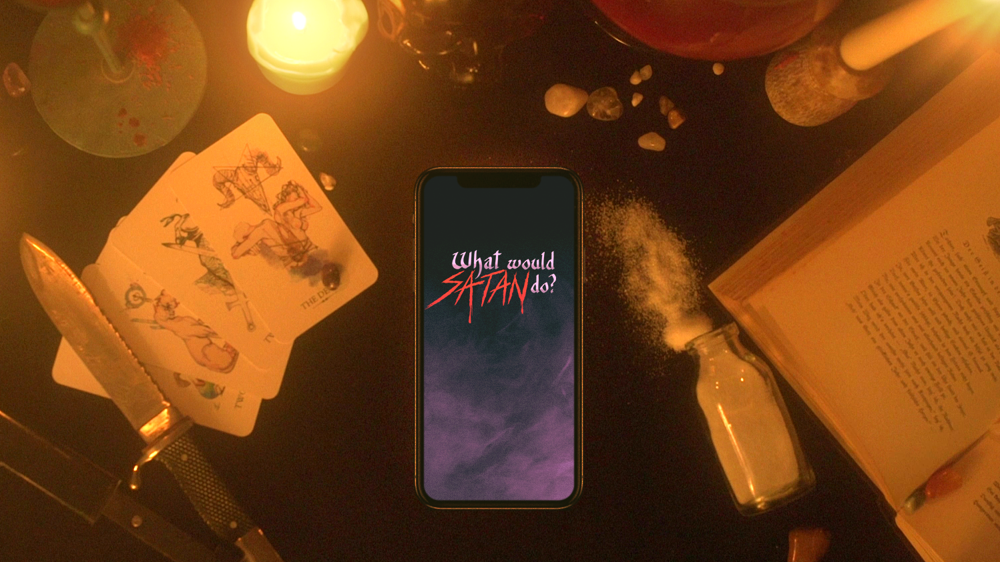

What would Satan do?
 GitHub'What would Satan do?'' is a Augmented Reality boardgame, created as my 3rd semester project at H_DA in 2019/20. It uses AR features to digital project the items onto the table between the players. The Idea was to create a game that can be played anywhere by anyone (as long they are privileged enough to own a modern smartphone) with their friends.
About Witches And Satanists - The Game Loop
 In 'What would Satan do?' a witches coven meets up, since one of them got possessed by Satan and they need to stop his corruption to save the witch and possibly the world.
To perform the ritual to ban Satan they first have to find out which one of them got possessed.
Unfortunately they got infiltrated by satanists, whose goal is it to stop the ritual so Satan can rule the world.
In 'What would Satan do?' a witches coven meets up, since one of them got possessed by Satan and they need to stop his corruption to save the witch and possibly the world.
To perform the ritual to ban Satan they first have to find out which one of them got possessed.
Unfortunately they got infiltrated by satanists, whose goal is it to stop the ritual so Satan can rule the world.
As such we have the classic set up of a social deduction game, similar to 'Die Werwölfe vom Düsterwald' or 'Secret Hitler'. A group of player have to somehow deduct which one of them is part of an evil undercover group who try to sabotage them. While the good witches are stronger in the numbers, the satanists have much more information. They know exactly who is possessed and have to lead the others astray while not being too suspicous.
In each round the group has to decide on an oracle who will perform a ritual on one other person to see their role and bring new information into the discussion.
To decide on the oracle each player can give each other player their trust.
The trust a player has is displayed by the number of candles in front of them.
The player with the most candles at the end of the voting phase will become the oracle (if tied, randomness decides between the two).
The voting phase ends if everybody is satisfied with their votes and lays down their phone in front of them.
The oracle can now check one other player and will see the role of them.
If Satan is found fast enough they can perform the exorcism, but if they take too long Satan will take over and the game is lost for the witches.
There are a lot more little special rules that set 'WWSD' apart from other social deduction games.
One important feature is that nobody dies between the rounds so everybody is involved in the game until the end.
Also the usage of the own smartphone makes it much easier to relay secret personal information to the players or too assign the roles secretely and randomly.
Networking
 To enable our vision of a digital boardgame that can be played anytime anywhere we wanted a networking solution that is not based on interent connectivity.
There were two options to choose from.
One is bluetooth connection between the phones and one was to utilize WLAN hotspot functionalities for local communciation.
In terms of technical specs WLAN and Bluetooth are quite similar.
Both have a supported bit rate of 1 or 2Mb/s and are working in the 2.4GHz ISM band.
Bluetooth consumes 3.2 times less energy per bit when sending data and does it it slightly faster, but the most significant differences appear to be the way of operating:
In Piconets (like Bluetooth) data can only send between one client and the server at the time, while with WLAN each participant can send data to all other devices at the same time (multicast).
For use cases where not so much data is sent and also time is not so highly relevant Bluetooth might be a better solution even for more than three devices, since its more energy saving when in idle (no data is sent, but the network is active).
In that case it should be considered to not use Bluetooth BR or EDR for high bit rates, but rather LE to maximize power saving.
To enable our vision of a digital boardgame that can be played anytime anywhere we wanted a networking solution that is not based on interent connectivity.
There were two options to choose from.
One is bluetooth connection between the phones and one was to utilize WLAN hotspot functionalities for local communciation.
In terms of technical specs WLAN and Bluetooth are quite similar.
Both have a supported bit rate of 1 or 2Mb/s and are working in the 2.4GHz ISM band.
Bluetooth consumes 3.2 times less energy per bit when sending data and does it it slightly faster, but the most significant differences appear to be the way of operating:
In Piconets (like Bluetooth) data can only send between one client and the server at the time, while with WLAN each participant can send data to all other devices at the same time (multicast).
For use cases where not so much data is sent and also time is not so highly relevant Bluetooth might be a better solution even for more than three devices, since its more energy saving when in idle (no data is sent, but the network is active).
In that case it should be considered to not use Bluetooth BR or EDR for high bit rates, but rather LE to maximize power saving.
Since our game design did not priotize fast data delivery as much, but our session could easily take over 30mins we chose Bluetooth as our network technology to squeeze out as much battery life as possible.
At least that is our official reasoning why we used it.
In reality the energy saving is probably negligible, while the faster data transmission could have had a noticable impact on responsiveness and perfomance of the game, but well. It still worked fine enough.
Gameplay Showcase
The Gameplay was recorded during the Animation & Game Finals Presentations in 2020. While it may be hard to follow it contains all the screens and phases throughout the game. Just skip a bit through it if you are interested.